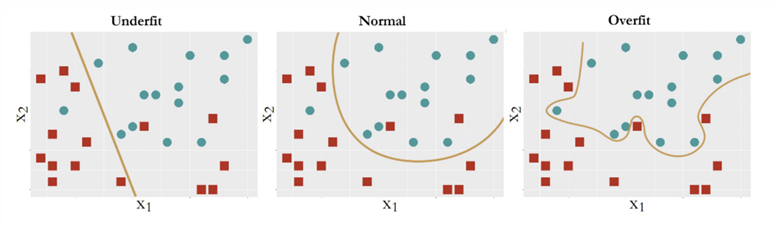

1.1 Definition
Cross-validation is defined as a method of estimating our model error using a single observed dataset by separating data used for training from the data used for model selection and final accuracy.(Lau, 2020) Cross- validation is a "conceptually simple technique, easy to apply and requires no specific knowledge about the details of the model.(Abu-Mostafa, 2012)The general approach is that the model is trained several times, and for each time one part of the whole dataset is treated as learning data whereas the rest is used for validation.” (Baron, 2021)
In many instances, multiple rounds of cross-validation are performed using different subsets, and their results are averaged to determine which model is a good predictor. (Shaffer, 1993)
1.2 Overfitting
Cross-validation is used to protect a model from overfitting. Overfitting occurs when the model fits more data than required, and it tries to capture every datapoint fed to it. As a result, it starts capturing noise and inaccurate information from the data set, which degrades the performance of the model. (Abu-Mostafa, 2012) Noise in this context means data points which are meaningless or irrelevant and occur by random chance. Many times, overfitting occurs because the training dataset is too small or is not representative of the data set as a whole. In other words, the test set has different characteristics than the training set. Overfitted models try to memorize all the data instead of learning the patterns hidden in the data. (Ying, 2019)
When a model is too complex, it overfits the data. This happens when the model finds patterns in the training data that are just caused by random observations and that won’t recur in the future. (Lau, 2020) When a model is too simple, it underfits the data. Underfitting occurs when the model fails to capture the true relationship between the explanatory variables and the response variable. (Lau, 2020)
Analyzing the graphs below, the model labeled Underfit has many data points are misclassified. On the other hand, the model labeled Overfit has allowed noise to affect the results. The model in the middle maintains a balance: it captures the structural constancy in the data to form the model, while resisting the noise and refusing to let it bend its decision boundary.

Badillo(2020)
Additionally, there is a tradeoff between bias and variance that one must consider. The graph below depicts this balance between bias and variance. The horizontal axis is epoch, and the vertical axis is error, the blue line is the training error and the red line is the validation error. If our model stops learning before the yellow triangle, it’s underfitting. If our model stops learning after the yellow triangle, we get overfitting.
Another “cure” for overfitting is regularization. (Abu-Mostafa, 2012) When a model becomes too complicated, it tends to take all the features into consideration, even though some of them have very limited effect on the final output. (Ling, 2019) Regularization avoids overfitting by adding a penalty to the model’s loss function. (Ling, 2019) Another way to avoid overfitting is to prune the model by eliminating meaningless or irrelevant data. One can implement pre-pruning by deleting conditions and rules from the model during the learning process or post- pruning by removing conditions and rules from the model that were generated during the learning phase. (Ling, 2019) Another technique, known as early stopping, pauses training before the model starts learning the noise. (Ling, 2019) Training continues up to a certain number of iterations or until a new iteration no longer improves the performance of the model. After that point, the model begins to overfit the training data so we need to stop the process before passing that point. (Abu-Mostafa, 2012)